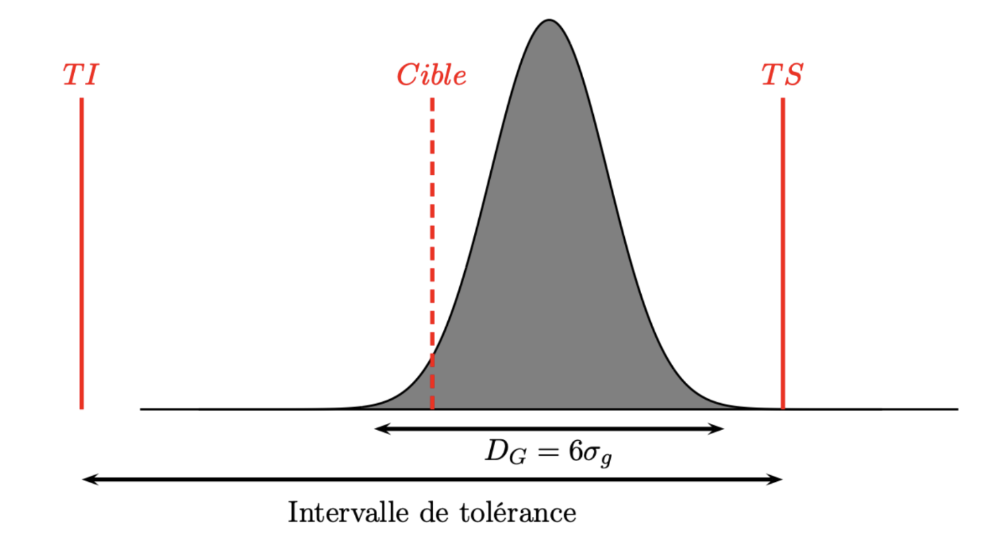

Voir la correction
library(multiSPC)
df<-read.csv("cap_data.csv",sep=",")
mu=mean(df$obs)
sG=sd(df$obs)
sI=df|> group_by(sample) |> summarise(S=sd(obs)) |> select(S) |>unlist() |> mean()/c4(5)
capability(n=5,mu=mu,sI=sI,sG=sG,TI=0.9,TS=1.1)Dans la suite \(TS,TI\) désigneront la tolérance supérieure et inférieure du procédé de fabrication.
Comme précédemment on distingue la variabilité globale du procédé et celle uniquement attribuable à la machine.
On définit deux types d’indices de capabilité :
\[ Cam=\frac{TS-TI}{D_I}. \]
Il est clair que lorsque \(Cap<1\) le procédé n’est pas capable, il faut le revoir afin d’obtenir une production conforme aux tolérances. Par contre si \(Cap>2\) on va considérer que le procédé est capable dans la mesure où la dispersion naturelle des observation est 2 fois moins importante que l’intervalle de tolérance.
Les deux indicateurs précédents ont un gros inconvénient dans la mesure où ils ne permettent pas de juger du décentrage éventuel du procédé. Par exemple, dans le cas d’une loi normale, on peut avoir une situation comme celle ci-dessous :

On voit que le procédé est bien dans l’intervalle de tolérance avec une valeur \(Cap>2\) mais qu’il est clairement décentré. Donc il faut définir de nouveaux indices de capabilité qui vont permettre de juger de la justesse du procédé !
Le coefficient de performance du procédé est
\[ Cpk=\frac{\min\left(\mu-TI;TS-\mu\right)}{3\sigma_{G}}, \] et celui la machine est \[ Cmk=\frac{\min\left(\mu-TI;TS-\mu\right)}{3\sigma_{I}}. \]
Il est clair que l’on a :
\(Cap>Cpk,\)
\(Cam>Cmk.\)
On utilisera la norme suivante :
Un procédé (respectivement une machine) est capable si \(Cpk>1.33\) (respectivement \(Cmk>1.33\))
Les calculs de \(Cap\) et de \(Cpk\) sont basés sur des estimations de l’écart type \(\sigma_G\). Dans le cas d’une loi normale on sait construire un intervalle de confiance de \(\sigma_G\), on en déduit que
L’intervalle \(\left[\widehat C_{ap}\sqrt{\dfrac{\chi^2_{n-1}(\alpha/2)}{n-1}};\widehat C_{ap}\sqrt{\dfrac{\chi^2_{n-1}(1-\alpha/2)}{n-1}}\right]\) est un intervalle de confiance de \(Cap\) au niveau de confiance \(100(1-\alpha)\) %.
L’intervalle \(\left[\widehat C_{pk}\left(1-z_{1-\alpha/2}\sqrt{\dfrac{1}{9n\widehat C_{pk}^2}+\dfrac{1}{2(n-1)}}\right);\widehat C_{pk}\left( 1+z_{1-\alpha/2}\sqrt{\dfrac{1}{9n\widehat C_{pk}^2}+\dfrac{1}{2(n-1)}}\right)\right]\) est un intervalle de confiance de \(C_{pk}\) au niveau de confiance \(100(1-\alpha)\) %.
De même pour \(C_{am},C_{mk}\)
On suppose que les tolérance sont \(TI=0.9\) et \(TS=1.1\). En utilisant la fonction capability du package multiSPC calculer les indices de capabilité associés à ce procédé de fabrication.
library(multiSPC)
df<-read.csv("cap_data.csv",sep=",")
mu=mean(df$obs)
sG=sd(df$obs)
sI=df|> group_by(sample) |> summarise(S=sd(obs)) |> select(S) |>unlist() |> mean()/c4(5)
capability(n=5,mu=mu,sI=sI,sG=sG,TI=0.9,TS=1.1)Cette étape de vérification est indispensable dans tout système de contrôle de qualité.
Une mesure doit être répétable et reproductible (R&R).
La répétabilité désigne la capacité d’un processus, d’un instrument de mesure ou d’une expérience à produire des résultats identiques ou très proches lorsque les mêmes conditions (même opérateur, même équipement, …) sont appliquées plusieurs fois de suite sur une courte période.
La répétabilité est donc intrinsèquement liée à la qualité fournie par un instrument de mesure. On pourra vérifier que les spécifications de l’instrument sont bien conformes à des mesures effectuées in situ.
La reproductibilité désigne la capacité d’un processus, d’une expérience ou d’une mesure à produire des résultats similaires lorsqu’il est réalisé par des personnes différentes, dans des lieux différents, avec des équipements différents, ou à des moments différents.
Dans un système complet à l’erreur de la mesure proprement dite (R&R), s’ajoute la variabilité liée au produit :
\[ \sigma_{Total}^2=\underbrace{\sigma_{repetability}^2+\sigma_{reproductivity}^2}_{\sigma^2_{R\& R}}+\sigma_{product}^2. \]
On considère \(I\) produits, \(J\) opérateurs et chaque mesure est repétée \(K\) fois Pour évaluer la répétabilité et la reproductibilité d’une mesure, on utilise un modèle d’ANOVA : Soit \(Y_{ijk}\) la mesure du produit \(i\) par l’opérateur \(j\) à la répétition \(k\).
On écrit \[
Y_{ijk}=\mu+\alpha_i+\beta_j+\varepsilon_{ijk}
\] où on considère que \(\varepsilon_{ijk}\sim \mathcal N(0,\sigma^2)\).
Les paramètres de ce modèle permettent d’évaluer l’ensemble des composantes de la variabilité totale de la mesure:
\((\alpha_i)_i\) pour la variabilité produit,
\((\beta_j)_j\) pour la reproductibilité,
\(\sigma^2\) pour la répétabilité
Exemple : On cherche à détecter les sources de variabilité d’une analyse par qPCR La réponse de la mesure dépend de la quantité d’ADN recherchée dans l’échantillon de départ.
4 espèces différentes de mycoplasmes sont étudiées.
2 opérateurs ont réalisé les mesures, sur 2 jours distincts, avec 4 répétitions à chaque fois. Les données sont disponibles ici.
| souche | operateur | jour | repetition | reponse | |
|---|---|---|---|---|---|
| 1 | S1 | O1 | J1 | r1 | 29.10 |
| 2 | S1 | O1 | J1 | r2 | 28.35 |
| 3 | S1 | O1 | J1 | r3 | 28.14 |
| 4 | S1 | O1 | J1 | r4 | 28.28 |
| 5 | S1 | O1 | J2 | r1 | 28.41 |
| 6..63 | |||||
| 64 | s4 | O2 | J2 | r4 | 32.78 |
Dans cet exemple on va pouvoir évaluer la variabilité due au produit, à l’opérateur, au jour grâce à une Anova :
options(contrasts=c("contr.sum","contr.sum"))
model <- lm(reponse ~ souche+operateur+jour, data = data)
anova(model)Analysis of Variance Table
Response: reponse
Df Sum Sq Mean Sq F value Pr(>F)
souche 3 137.077 45.692 70.5476 < 2.2e-16 ***
operateur 1 5.499 5.499 8.4903 0.005064 **
jour 1 0.011 0.011 0.0170 0.896647
Residuals 58 37.566 0.648
---
Signif. codes: 0 '***' 0.001 '**' 0.01 '*' 0.05 '.' 0.1 ' ' 1On peut ainsi étudier :
L’effet souche (\(F(3,58)=70.5,p<.001\)) qui est significatif, l’effet opérateur (\(F(1,58)=8.5,p=.005\)) qui est également significatif et l’effet jour (\(F(1,58)=0.02,p=.90\)) qui ne l’est pas.
La variabilité associée au jour qui est une composante de la reproductibilité n’est pas considérée par la suite car très proche de 0.
Le résidu correspond à la répétabilité de la mesure.
Pour évaluer la part de chaque composante de la variabilité on écrit \[ Y_{ijk}=\mu+\alpha_i+\beta_j+\varepsilon_{ijk} \]
où on suppose que :
\(\alpha_i\sim \mathcal N(0,\sigma^2_\alpha)\) (\(\sigma^2_\alpha\) : variabilité produit),
\(\beta_j\sim \mathcal N(0,\sigma^2_\beta)\) (\(\sigma^2_\beta\) : reproductibilité),
\(\varepsilon_{ijk}\sim \mathcal N(0,\sigma^2)\) (\(\sigma^2\) : répétabilité).
Dans R, l’Anova à effets aléatoires :
suppressMessages(library(lmerTest))
model <- lmer(reponse ~ 1 + (1|souche) + (1|operateur) , data = data)
vc <- as.data.frame(VarCorr(model))$vcov
names(vc)=as.data.frame(VarCorr(model))$grp
df=data.frame(variance=c(vc,sum(vc)),"per_var"=c(vc/sum(vc)*100,100))
rownames(df)=c("Part","reproductibiliy","repetebility","Total")| variance | per_var | |
|---|---|---|
| Part | 2.82 | 78.12 |
| reproductibiliy | 0.15 | 4.21 |
| repetebility | 0.64 | 17.67 |
| Total | 3.60 | 100.00 |
[1] "Estimation de RR : 21.88"On utilise les références suivantes :
Donc ici la mesure est acceptable.
Il est évalué comme précédemment en considérant les tolérances inférieures et supérieures imposées par le client :